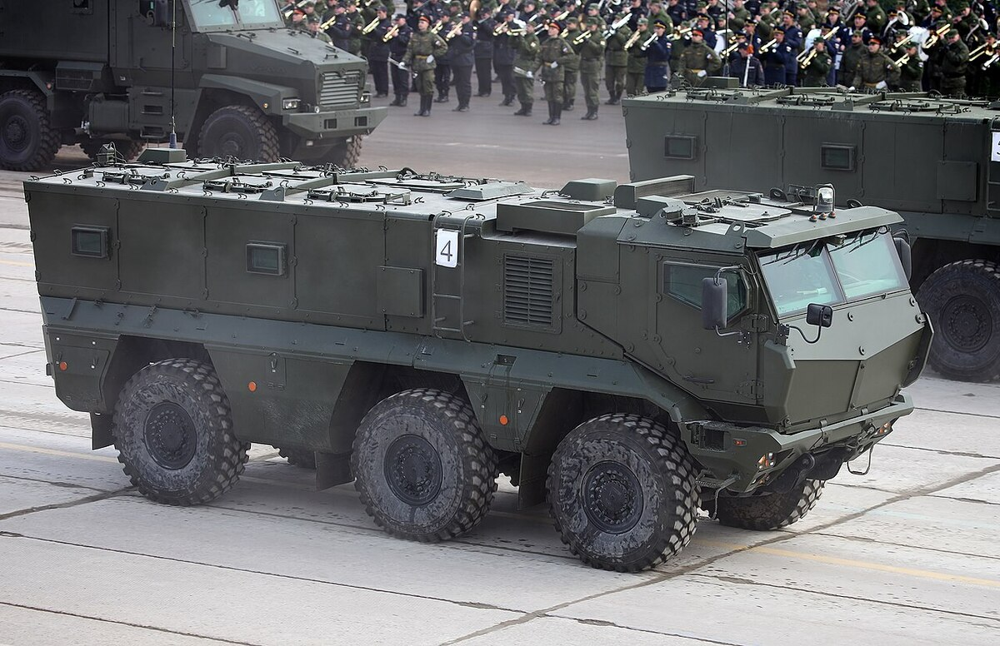
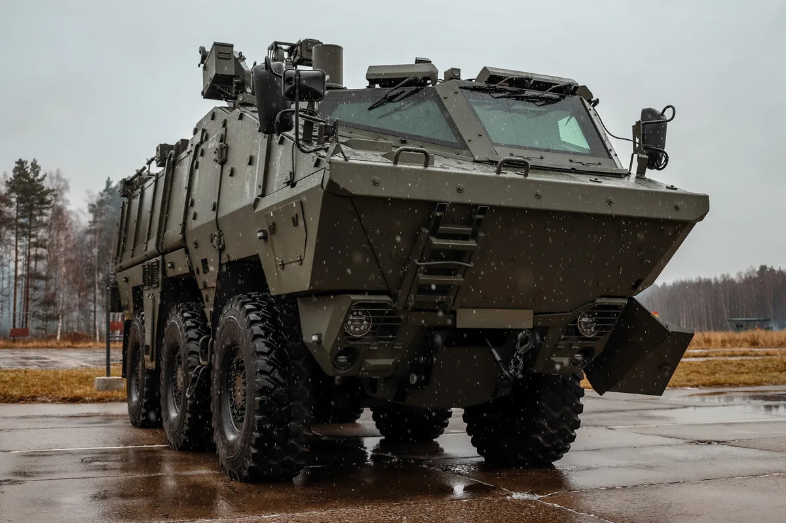

Вернуться к таблице
КамАЗ-63968 «Тайфун-К» —
универсальный бронеавтомобиль повышенной защищённости на оригинальном шасси.
История создания:
История всего семейства «Тайфун» начинается с 2010 года, когда была утверждена Министром
обороны Российской Федерации «Концепция развития военной автомобильной техники
Вооруженных Сил Российской Федерации на период до 2020 года», которая предписывает
развитие высокоунифицированных семейств бронеавтомобилей. В результате была создана
единая колёсная грузовая платформа «Тайфун», обеспечивающая высокую защищённость
экипажа, груза и узлов автомобиля от стрелкового вооружения и фугасов. А также на
которую можно монтировать разное целевое оборудование и создавать на ее базе необходимые
модификации вроде машин связи, мобильных артиллерийских систем, автокранов,
транспортно-пусковых машин БЛА, эвакуаторов, экскаваторов и других. Над созданием
работали специалисты автозавода «Урал», ОАО «Автодизель» «Группы ГАЗ», НТЦ ОАО «КАМАЗ»,
НИИ Стали — где спроектирована броня машины, Федеральный ядерный центр в Сарове,
рассчитывавший защищённость бронекорпуса, компания «Магистраль-ЛТД», занимавшаяся
созданием бронестёкол, МГТУ им. Н. Э. Баумана, занимавшийся разработкой
гидропневматической подвески и множество других компаний и НИИ. Необходимость создания
подобных машин диктовалось тем, что основная масса боевых потерь в войсках происходила
из-за подрыва автомашин на минном поле или от фугасов во время передвижения колонн.
Вооружение машины:
Может комплектоваться боевым модулем, в котором могут устанавливаться пулемёты различных
моделей. Также предусмотрен боевой модуль с дистанционным управлением, который позволяет
оператору вести наблюдение и атаковать цели, находясь под защитой корпуса. Бронемодуль
КамАЗ-63968 оснащён амбразурами для ведения стрельбы из стрелкового оружия.
Бронирование машины:
Бронирование соответствует уровню 3b «натовской» классификации STANAG 4569, по которому
машина выдерживает подрыв осколочно-фугасных устройств массой 8 кг в тротиловом
эквиваленте под любым местом автомобиля. Противопульная защита соответствует четвёртому
уровню. Установлена комбинированная броня из керамики и стали, которая защищает от
бронебойных пуль калибра 14,5×114 мм. В том числе и бронестекло толщиной 128,5—129,0 мм
с прозрачностью в 70 %, разработанное компанией «Магистраль ЛТД» и испытанное в НИИ
Стали, выдерживающее 2 выстрела с расстоянием между ними в 280—300 мм при обстреле из
КПВТ со скоростью пули 911 м/с в момент соприкосновения со стеклом. Пулестойкость
превышает самые высокие требования по имеющимся ГОСТ (ГОСТ Р 51136 и ГОСТ Р 50963), в
которых наивысший уровень — это обстрел бронебойными патронами Б-32, 7,62×54 мм из СВД.
При производстве, Магистраль-ЛТД ориентировалась на западные стандарты уровня IV STANAG
4569 — гарантированной защите при обстреле бронебойным боеприпасом Б-32, 14,5×114 мм с
дистанции 200 м со скоростью пули 911 м/с. Имеются пулестойкие шины 16.00R20 с
автоматической подкачкой воздуха и регулируемым давлением до 4,5 атмосфер.
Мобильность машины:
Боевая масса — 22 тонны
Мощность двигателя — 450 л.с.
Скорость по шоссе — 110 км/ч
Скорость по пересечённой местности — 80 км/ч
Запас хода по шоссе — 1200 км
Запас хода по пересечённой местности — 700 км
Ёмкость топливных баков — 420 л
Удельная мощность — л.с./т
Преодолеваемый подъём — 30°
Преодолеваемая стенка — 1,5 м
Преодолеваемый ров — 1,5 м
Преодолеваемый брод — 1,5 м
Некоторые модификации машины:
КамАЗ-63969 «Тайфун-К» —
бронетранспортер с колёсной формулой 6×6 и дистанционно управляемой пулемётной
установкой. Однообъёмный бронемодуль (кабина и кузов — единая конструкция). Впервые
был публично показан в июне 2013 г. в цеху на этапе сборки. Имеет круговое бронирование,
рассчитанное на противостояние пулям калибра 14,5 и 12,7 мм (соответствует уровню 4 по
STANAG 4569). Противоминная защита соответствует уровню 3b. Масса машины в снаряжённом
состоянии — 19,7 т, полезная нагрузка — 4 тонны. Серийно не производится.
Эксплуатанты машины:

Синий — действующие эксплуатанты.
Фотографии машины разных модификаций:
Изображение |
Модификация |
|  |
КамАЗ-63968 «Тайфун-К» |
|  |
КамАЗ-63969 «Тайфун-К» |